GitHub のプルリクエスト機能
プルリクエストとは
ここまでの学習内容をマスターできていれば、ローカルリポジトリで変更した内容をリモートリポジトリにアップロードすることができるようになっているはずです。
あとは変更内容をリモートリポジトリの master ブランチにマージするのみです。
しかし、ここで安易にリモートリポジトリの master ブランチにマージするのは危険です。
なぜなら、リモートリポジトリの master ブランチはチームで共有しているため、勝手に更新すると困ってしまうメンバーが出てきてしまうかもしれません。
また、そもそもローカルリポジトリで行った変更が正しくなかったり、対応が足りていなかったりする可能性もあります。
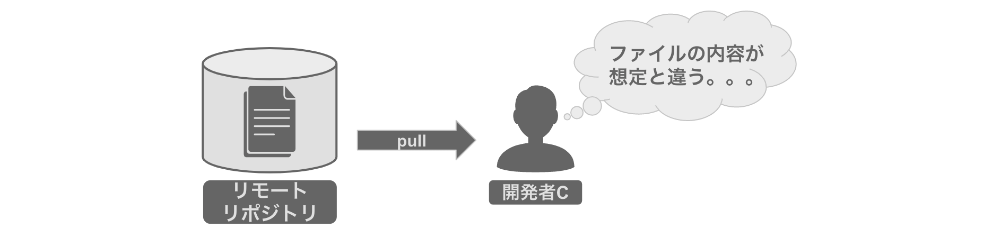
このようなときは プルリクエスト という GitHub の機能を利用します。
この機能を使用すると、簡単に他のメンバーに変更内容のレビューを依頼することができます。
他のメンバーにレビューしてもらうことで事前にトラブルやリスクを回避することができるのです。
メモ： GitHub 以外のリモートリポジトリのサービスにもプルリクエストと同様の機能がありますが、
名称が異なる場合があります。
例えば、GitLab の場合は同様の機能を「マージリクエスト」と呼称されています。
プルリクエストを作ってみよう
今回は以下の手順に沿って進めていき、最終的にはプルリクエストを作ってみましょう。
(1) ローカルリポジトリの develop ブランチで sample.txt の内容を「APPLE」に上書きします。
(2) リモートリポジトリに develop ブランチを作成し、変更内容をアップロードします。
(3) develop ブランチでの変更を master ブランチにマージする内容のプルリクエストを作成します。
(1) ローカルリポジトリの develop ブランチで sample.txt の内容を「APPLE」に上書きします。
まずはローカルリポジトリに作業用ブランチである develop ブランチを作成しましょう。
先程は git branch [ブランチ名] と git checkout [ブランチ名]を実行しましたが、
git checkout コマンドのオプション（-b）の後にブランチ名を指定すると、
この２つの処理を1つのコマンドで行うことができます。
git checkout -b [ブランチ名]
今回は develop ブランチを作成して、同ブランチを作業ブランチにしたいため以下のコマンドを実行します。
git checkout -b develop
作業ブランチに切り替わったので、以下のコマンドを実行して sample.txt の内容を「APPLE」となるように上書きしましょう。
echo APPLE > sample.txt
作業が終わったので、以下のコマンドを実行して変更内容をコミットしましょう。
git add sample.txt
git commit -m "updated sample.txt"
(2) リモートリポジトリに develop ブランチを作成し、変更内容をアップロードします。
ローカルリポジトリの変更内容をリモートリポジトリに反映しましょう。
以下のコマンドを実行して、リモートリポジトリに develop ブランチを作成し、変更内容をアップロードします。
git push origin develop
コマンドを実行したのち、GitHub上で編集したファイルを確認してみましょう。
(3) develop ブランチでの変更を master ブランチにマージする内容のプルリクエストを作成します。
GitHub の画面の [Pull request] をクリックしましょう。 クリックするとプルリクエストの一覧の画面に切り替わります。
続いて、画面内の「New pull request」ボタンをクリックしましょう。
クリックするとプルリクエストを作成する画面に切り替わります。
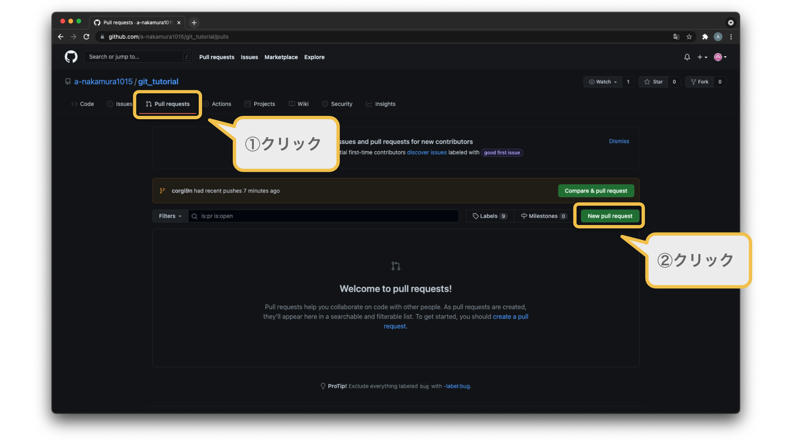
この際にマージ先のリモートブランチを指定します。
今回は develop（リモート）の内容を、master（リモート）にマージします。
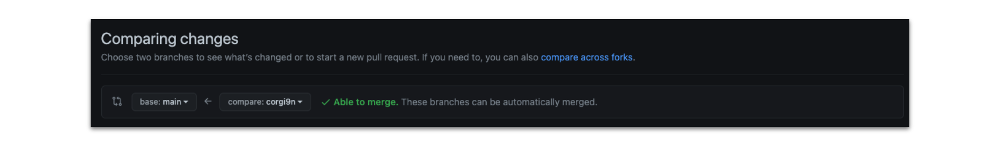
この画面でファイルの差分を確認することができます。
ここで意図しない修正が見つかった場合はローカルリポジトリで再修正した後、
再度リモートリポジトリにプッシュをしましょう。
内容に問題がなければ「Create pull request」ボタンをクリックしましょう。
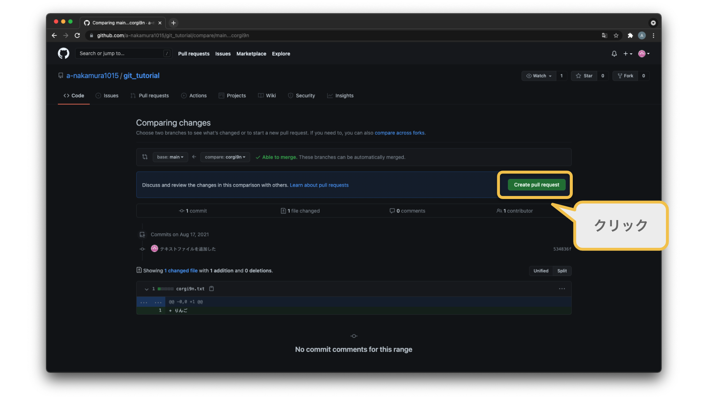
最後に、プルリクエストのタイトルとその内容を記載します。
また、リモートリポジトリに招待されているアカウントをレビュワーに
指定することができます。
今回は事前に他のアカウントを招待していないためレビュワーを指定できませんが、
実際の開発ではここでレビュワーを指定することができます。
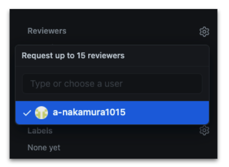
もう一度内容を確認して問題がなければ、「Create pull request」ボタンをクリックしましょう。
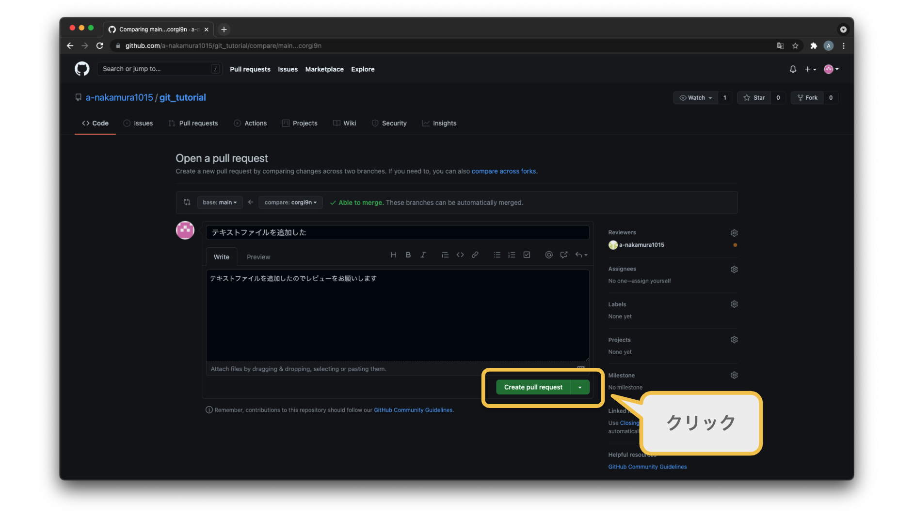
プルリクエストが作成できれば成功です！ プルリクエストが作成されると、レビュワーにメールで通知されます。 （このメールは GitHub アカウントに紐付いているメールアドレスです。） 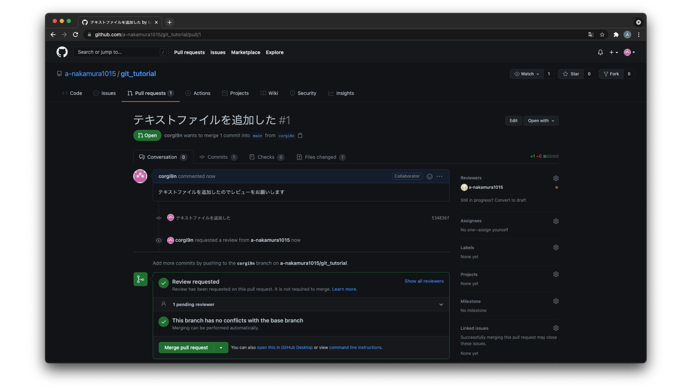
GitHub の画面の [Pull request] をクリックしましょう。
クリックするとプルリクエストの一覧の画面に切り替わります。
すると、先ほど作成したプルリクエストを確認することができます。
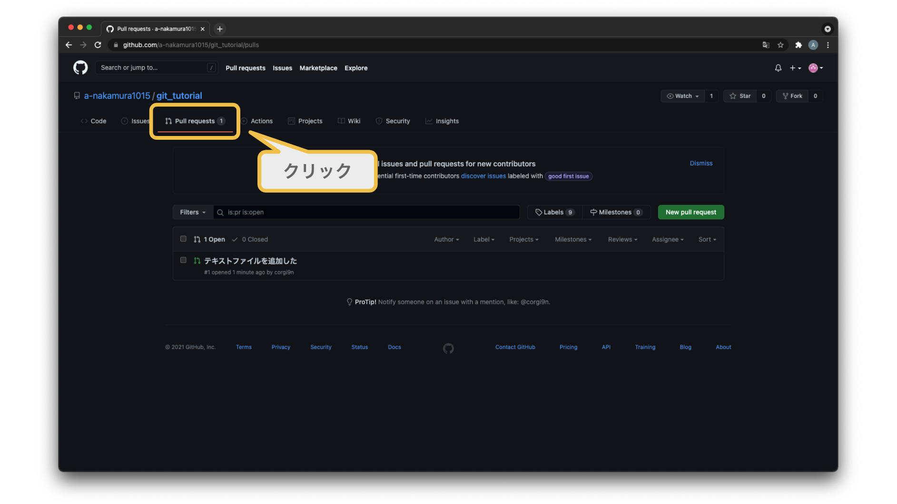
仮にレビュワーが変更内容を承認した場合はチェックマークが表示されます。 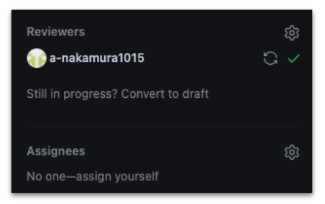
今回はレビュワーがいないためレビュワーから承認があったと仮定して、
最後にリモートリポジトリの master ブランチにマージしてみましょう。
まずは「Merge pull request」ボタンをクリックします。
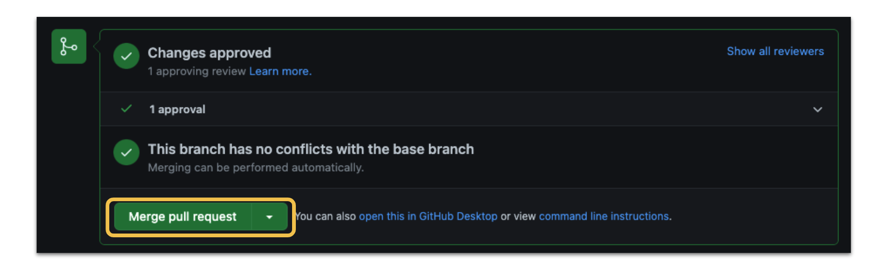
すると、「Confirm merge」ボタンが表示されます。
このボタンをクリックすると 、リモートリポジトリの master ブランチと develop ブランチをマージし、
マージをしたという内容のコミットログを生成されます。
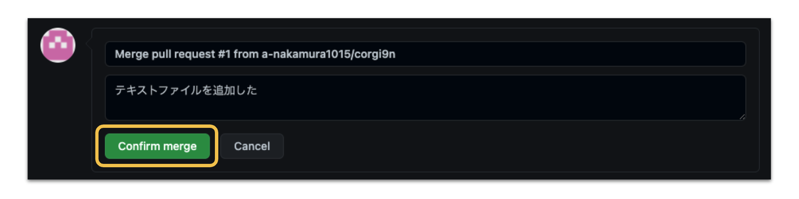
「Confirm merge」ボタンをクリックするとマージが完了しますが、その後「Delete branch」ボタンが表示されます。
このボタンをクリックするとリモートリポジトリの作業ブランチ（develop ブランチ）が削除されます。
同じ作業ブランチを残しておきたい場合はクリックする必要はないですが、不要な場合はこのボタンをクリックして削除しましょう。
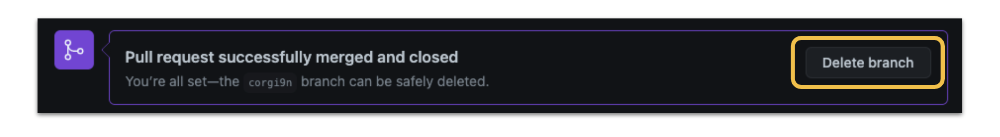
これでリモートリポジトリの master ブランチに変更内容が反映されました。
本当に反映できているかを以下の手順で確認をしてみましょう。
(1) ローカルリポジトリの作業ブランチを master ブランチに切り替えます。
(2) リモートリポジトリの master ブランチから最新のファイルをダウンロードします。
(1) ローカルリポジトリの作業ブランチを master ブランチに切り替えます。
以下のコマンドを実行して作業ブランチを master ブランチにしましょう。
git checkout master
(2) リモートリポジトリの master ブランチから最新のファイルをダウンロードします。 以下のコマンドを実行して、リモートリポジトリの master ブランチから最新のファイルをダウンロードしましょう。
git pull origin master
コマンド実行後に cat コマンドで sample.txt の中身を確認してみましょう。
ファイルの内容が「APPLE」になっていれば成功です！¥